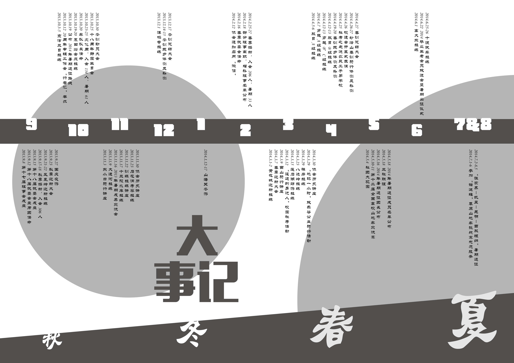
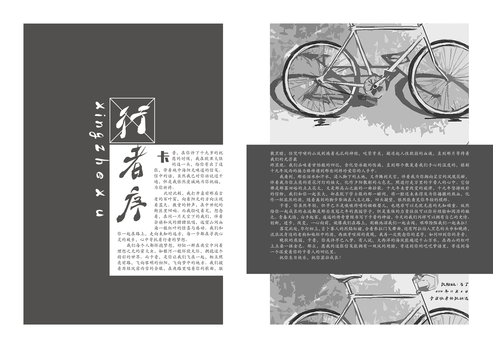
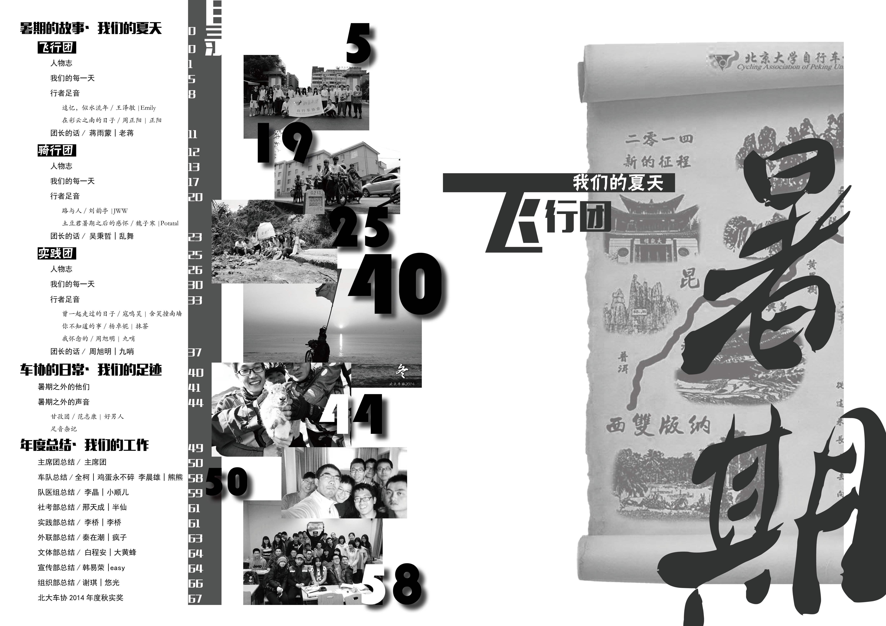
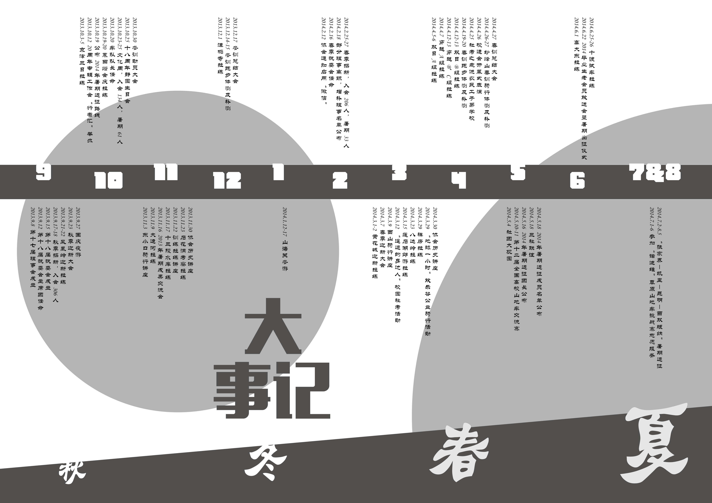
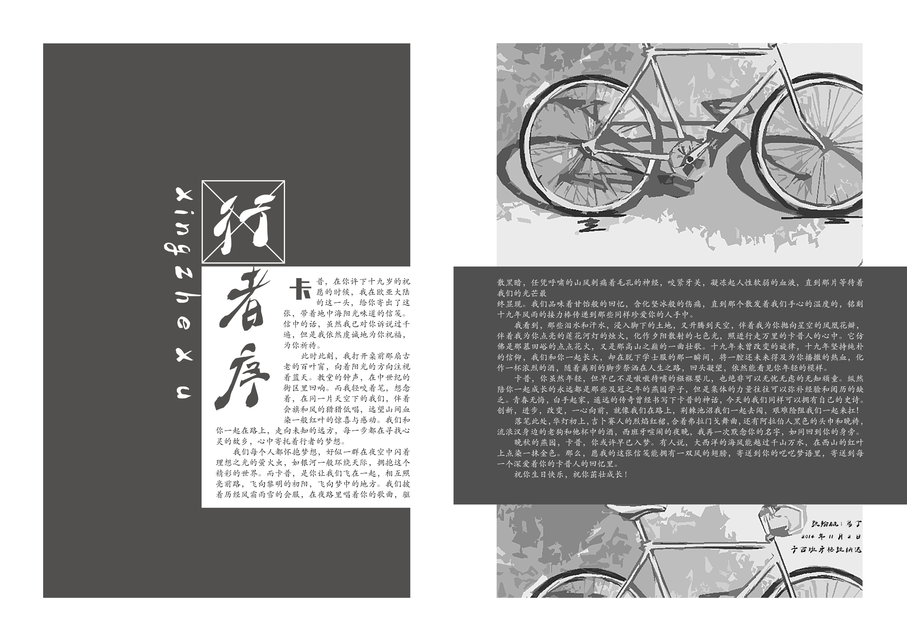
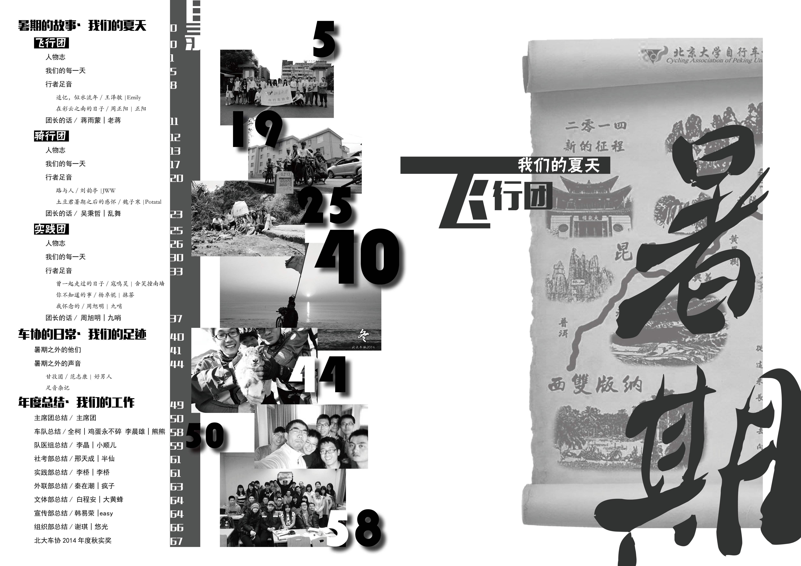
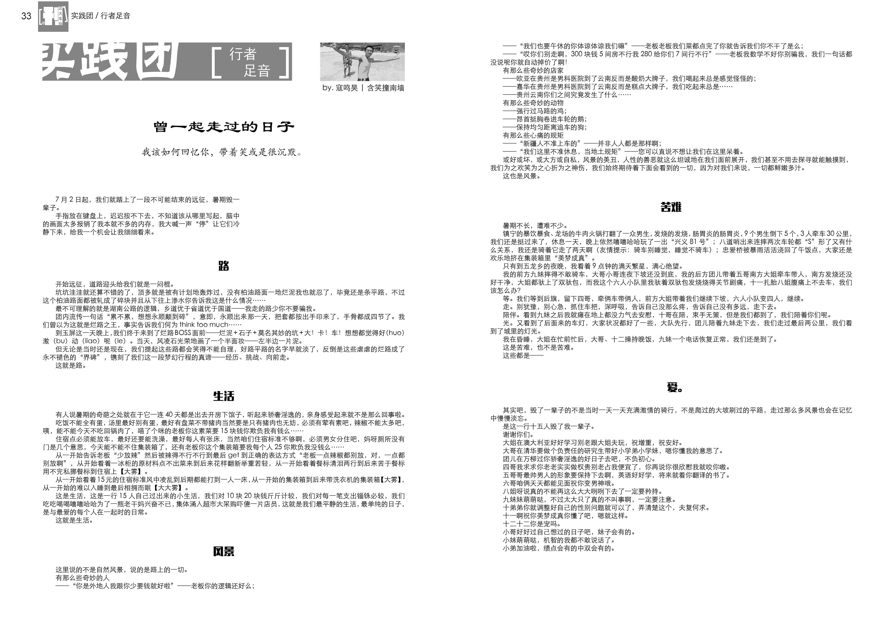
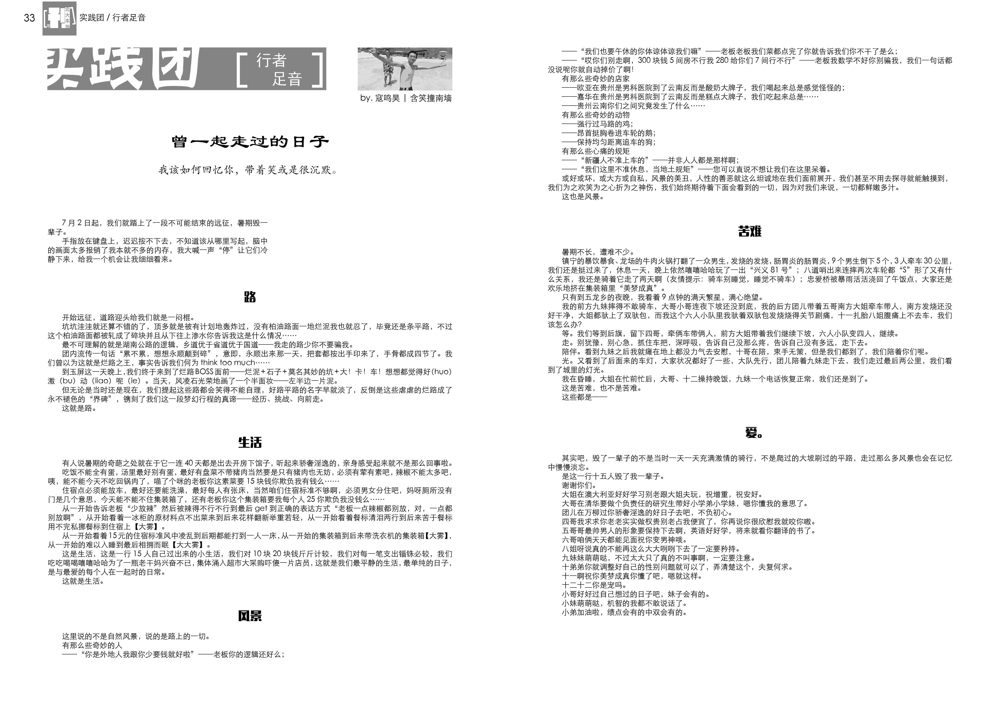

The 17th Annual of CAPU
In the summer of 2014, 13 students including me finished a 2380 km journey from Zhangjiajie, Hunan province, China to Daluo, border of China and Burma, on bicycle in 22 days. Beside our team, there were another two teams of Cycling Association of Peking University (CAPU) that successfully finished their journeys. We had been trained for one year to be prepared. Training including running, leg strength exercises and short-term bicycle tours in the outskirts of Beijing.
Annual of CAPU is designed to records our stories and feelings both in daily activities and in the summer journey. Also, it includes articles about how to manage the association writen by old members. I was designated as the editor in chief and art editor of the 17th annual of CAPU in September, 2014.
 







 



After repeated corrections, the annual finally published in late June, 2015 and it was distributed among hundreds of students and teachers in Peking University during recruit of CAPU in the fall, 2015.
It has attracted 275 new members to join us this semester and a new journey is waiting ahead of them.